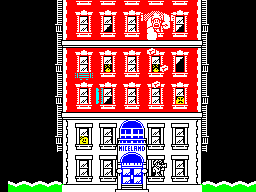
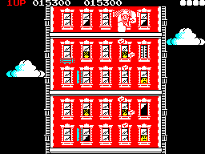
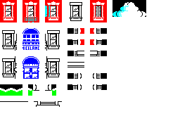
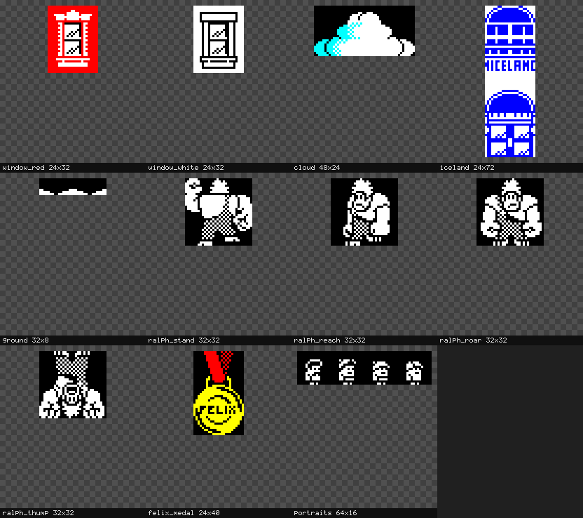
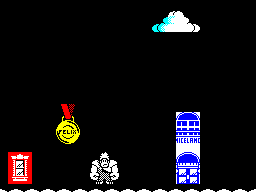
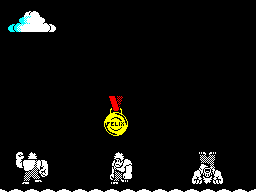
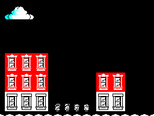

This manual is focused on zx scr: converting, cropping,
and combining ZX Spectrum .scr screens, and managing
sprite/tile collections cut from them. It doesn't repeat the full flag
reference — that's in the CLI manual — but walks
through the workflow with real artwork, including one genuine,
worth-knowing gotcha that a quick reference alone wouldn't surface.
If you're looking for tape or snapshot handling, see the tape handling manual or the CLI manual instead. This document is screens and sprites only.
zx scr pasteocrThe screenshots in this manual are real ZX Spectrum pixel art by
Jarrod Bentley — a set of Wreck-It-Ralph-themed
character sprites, tiles, and screens, published on zxart.ee as a "what would the home 8-bit
conversion have looked like" exercise. Genuine .scr-format
artwork, not synthetic test data, which is exactly the point: real pixel
art has real inconsistencies a hand-built fixture wouldn't, and doesn't
always align to the round numbers a tutorial might be tempted to
assume.
Two kinds of source material, used differently below:


Two complete Jarrod Bentley screens, shown as reference for what a finished tile-built scene looks like in practice.

The raw tile sheet these --cells coordinates come
from.
With boundaries confirmed precisely, cut is
straightforward — the same command as ever, now fed coordinates that are
actually correct:
$ zx scr encode tiles_set.png -o tiles_set.scr
$ zx scr encode ralph_sprites.png -o ralph_sprites.scr
$ zx scr encode more_sprites.png -o more_sprites.scr
$ zx scr cut --cells 0,0,3,4 --name window_red tiles_set.scr -o assets.cut
cut "window_red" (24x32, color) -> assets.cut [1 assets]
$ zx scr cut --cells 12,0,3,4 --name window_white tiles_set.scr -o assets.cut
$ zx scr cut --cells 20,0,6,3 --name cloud tiles_set.scr -o assets.cut
$ zx scr cut --cells 4,5,3,9 --name iceland tiles_set.scr -o assets.cut
$ zx scr cut --cells 0,15,4,1 --name ground tiles_set.scr -o assets.cut
$ zx scr cut --cells 0,0,4,4 --name ralph_stand ralph_sprites.scr -o assets.cut
$ zx scr cut --cells 10,0,4,4 --name ralph_reach ralph_sprites.scr -o assets.cut
$ zx scr cut --cells 0,10,4,4 --name ralph_roar ralph_sprites.scr -o assets.cut
$ zx scr cut --cells 0,15,4,4 --name ralph_thump ralph_sprites.scr -o assets.cut
$ zx scr cut --cells 16,0,3,5 --name felix_medal more_sprites.scr -o assets.cut
$ zx scr cut --cells 20,12,8,2 --name portraits more_sprites.scr -o assets.cutwindow_red and window_white are the same
size for a reason: both are single-window units meant to be pasted
repeatedly, side by side and stacked, to build a building's face out of
identical tiles — the same construction Bentley's own reference screens
use, not a single building-sized chunk.
Eleven assets, each with the exact dimensions its
--cells region names:
$ zx scr ls assets.cut
# NAME SIZE PIXMAP
0 window_red 24x32 color
1 window_white 24x32 color
2 cloud 48x24 color
3 iceland 24x72 color
4 ground 32x8 color
5 ralph_stand 32x32 color
6 ralph_reach 32x32 color
7 ralph_roar 32x32 color
8 ralph_thump 32x32 color
9 felix_medal 24x40 color
10 portraits 64x16 color$ zx scr atlas assets.cut --scale 3 -o atlas.png
wrote atlas.png (11 assets, 832x738)
What zx scr atlas actually produces from
assets.cut above — all eleven pieces, at their real size,
with their real names and dimensions.
Worth a specific callout: ground is a genuine 32x8 — one
cell tall, thinner than "ground tile" might suggest. That's what the
source art actually has at that position, and the atlas confirms it
renders as a single thin strip, not a cropping mistake.
zx scr pasteThe natural next step is pasting these assets onto a screen to build
a scene — using zx scr paste itself, the same way a real
game's own sprite-drawing code would. Every asset above was cut without
--bitmap-only/--mask, so each one is a
colour chunk: it carries its own ink, paper, bright,
and flash, not just a bitmap shape. Pasted at a position where both
x and y are multiples of 8 — a cell boundary —
paste writes that stored colour into the target screen's
attribute cells, not just the bitmap:
$ zx scr encode blank.png -o scene.scr
$ zx scr paste assets.cut:cloud --at 152,8 --op or scene.scr -o scene.scr
$ zx scr paste assets.cut:ground --at 0,184 --op or scene.scr -o scene.scr
$ zx scr paste assets.cut:ground --at 32,184 --op or scene.scr -o scene.scr
$ zx scr paste assets.cut:ground --at 64,184 --op or scene.scr -o scene.scr
$ zx scr paste assets.cut:ground --at 96,184 --op or scene.scr -o scene.scr
$ zx scr paste assets.cut:ground --at 128,184 --op or scene.scr -o scene.scr
$ zx scr paste assets.cut:ground --at 160,184 --op or scene.scr -o scene.scr
$ zx scr paste assets.cut:ground --at 192,184 --op or scene.scr -o scene.scr
$ zx scr paste assets.cut:ground --at 224,184 --op or scene.scr -o scene.scr
$ zx scr paste assets.cut:window_red --at 8,152 --op or scene.scr -o scene.scr
$ zx scr paste assets.cut:iceland --at 176,112 --op or scene.scr -o scene.scr
$ zx scr paste assets.cut:ralph_roar --at 88,152 --op or scene.scr -o scene.scr
$ zx scr paste assets.cut:felix_medal --at 56,104 --op or scene.scr -o scene.scr
$ zx scr decode scene.scr -o scene.pngThirteen paste calls onto one blank canvas, nothing else
involved — and every piece comes out in its real colour: the red window
tile, the blue ICELAND stand with its lettering intact, the
cyan-and-white cloud, the green ground tiled along the bottom, the
yellow-and-red FELIX medal. Ralph himself renders in plain white on
black, which is exactly how the source art draws him — the checkered
dither pattern Wreck-It-Ralph sprites use is genuinely monochrome in the
original, not a rendering gap.

The real result of the thirteen paste calls above —
six colour chunks, one canvas, every one in its own real
colour.
The same collection composes into an entirely different screen just
by choosing different assets and positions — nothing about
assets.cut changes between scenes, only the
paste calls that read from it.
A second scene, reusing three of the Ralph frames cut earlier
(ralph_stand, ralph_reach,
ralph_thump) side by side along the ground, with the FELIX
medal floating above the middle one:
$ zx scr encode blank.png -o scene2.scr
$ zx scr paste assets.cut:cloud --at 8,8 --op or scene2.scr -o scene2.scr
$ zx scr paste assets.cut:ground --at 0,184 --op or scene2.scr -o scene2.scr
$ zx scr paste assets.cut:ground --at 32,184 --op or scene2.scr -o scene2.scr
$ zx scr paste assets.cut:ground --at 64,184 --op or scene2.scr -o scene2.scr
$ zx scr paste assets.cut:ground --at 96,184 --op or scene2.scr -o scene2.scr
$ zx scr paste assets.cut:ground --at 128,184 --op or scene2.scr -o scene2.scr
$ zx scr paste assets.cut:ground --at 160,184 --op or scene2.scr -o scene2.scr
$ zx scr paste assets.cut:ground --at 192,184 --op or scene2.scr -o scene2.scr
$ zx scr paste assets.cut:ground --at 224,184 --op or scene2.scr -o scene2.scr
$ zx scr paste assets.cut:ralph_stand --at 16,152 --op or scene2.scr -o scene2.scr
$ zx scr paste assets.cut:ralph_reach --at 104,152 --op or scene2.scr -o scene2.scr
$ zx scr paste assets.cut:ralph_thump --at 192,152 --op or scene2.scr -o scene2.scr
$ zx scr paste assets.cut:felix_medal --at 104,96 --op or scene2.scr -o scene2.scr
$ zx scr decode scene2.scr -o scene2.png
Three of the four cut Ralph poses, one collection, a different
arrangement of paste calls.
A third scene: two houses built the way Bentley's own reference
screen actually builds its building — repeating a single window tile
across a grid rather than placing one building-sized chunk. A bigger
house, three windows wide and three floors tall, and a smaller one
beside it, two windows wide and two floors tall — both with red windows
on the upper floors and white ones on the ground floor, both standing on
the same ground line, with a row of portraits out front
like people in the yard between them.
$ zx scr encode blank.png -o scene3.scr
$ zx scr paste assets.cut:cloud --at 8,8 --op or scene3.scr -o scene3.scr
$ zx scr paste assets.cut:ground --at 0,184 --op or scene3.scr -o scene3.scr
$ zx scr paste assets.cut:ground --at 32,184 --op or scene3.scr -o scene3.scr
$ zx scr paste assets.cut:ground --at 64,184 --op or scene3.scr -o scene3.scr
$ zx scr paste assets.cut:ground --at 96,184 --op or scene3.scr -o scene3.scr
$ zx scr paste assets.cut:ground --at 128,184 --op or scene3.scr -o scene3.scr
$ zx scr paste assets.cut:ground --at 160,184 --op or scene3.scr -o scene3.scr
$ zx scr paste assets.cut:ground --at 192,184 --op or scene3.scr -o scene3.scr
$ zx scr paste assets.cut:ground --at 224,184 --op or scene3.scr -o scene3.scr
# Big house: 3 windows wide, 2 red floors over 1 white ground floor.
$ zx scr paste assets.cut:window_red --at 8,88 --op or scene3.scr -o scene3.scr
$ zx scr paste assets.cut:window_red --at 8,120 --op or scene3.scr -o scene3.scr
$ zx scr paste assets.cut:window_white --at 8,152 --op or scene3.scr -o scene3.scr
$ zx scr paste assets.cut:window_red --at 32,88 --op or scene3.scr -o scene3.scr
$ zx scr paste assets.cut:window_red --at 32,120 --op or scene3.scr -o scene3.scr
$ zx scr paste assets.cut:window_white --at 32,152 --op or scene3.scr -o scene3.scr
$ zx scr paste assets.cut:window_red --at 56,88 --op or scene3.scr -o scene3.scr
$ zx scr paste assets.cut:window_red --at 56,120 --op or scene3.scr -o scene3.scr
$ zx scr paste assets.cut:window_white --at 56,152 --op or scene3.scr -o scene3.scr
# Small house: 2 windows wide, 1 red floor over 1 white ground floor.
$ zx scr paste assets.cut:window_red --at 160,120 --op or scene3.scr -o scene3.scr
$ zx scr paste assets.cut:window_white --at 160,152 --op or scene3.scr -o scene3.scr
$ zx scr paste assets.cut:window_red --at 184,120 --op or scene3.scr -o scene3.scr
$ zx scr paste assets.cut:window_white --at 184,152 --op or scene3.scr -o scene3.scr
$ zx scr paste assets.cut:portraits --at 88,168 --op or scene3.scr -o scene3.scr
$ zx scr decode scene3.scr -o scene3.png
Twenty-two paste calls, but only two chunks doing
all the work — window_red and window_white,
repeated in a grid at cell-aligned positions, the same construction
technique the original reference screen uses.
Two things change this picture, both worth knowing before they surprise you mid-project.
A mono chunk carries no colour of its own. Cut with
--bitmap-only (or --mask, which implies it),
an asset stores only its bitmap shape — zx scr ls reports
it as mono rather than color. Pasting one
doesn't touch the target's attributes at all, cell-aligned or not: the
shape blends into whatever colour is already there.
$ zx scr cut --cells 0,10,4,4 --name ralph_mono --bitmap-only ralph_sprites.scr -o mono.cut
cut "ralph_mono" (32x32, mono) -> mono.cut [1 assets]
$ zx scr paste mono.cut:ralph_mono --at 32,80 --op or clash.scr -o clash.scr
$ zx scr paste mono.cut:ralph_mono --at 160,80 --op or clash.scr -o clash.scrPasted twice onto a screen with a red region on the left and a blue one on the right, the identical mono cut comes out red on one side and blue on the other — it has no attribute of its own to override whatever the target cell already carries. This is real Spectrum hardware behaviour, not a limitation: an 8x8 attribute cell has exactly one ink colour and one paper colour, and a mono sprite drawn into it takes on whichever colour is already assigned there, the same way a monochrome sprite would on real hardware. It's also genuinely useful on purpose — a silhouette that should always match its background, drawn once and reused everywhere, is exactly what a mono chunk is for.
A colour chunk pasted off the cell grid loses its colour
too. The attribute write in paste is conditional
on x%8==0 && y%8==0; at any other position only the
bitmap merges, silently, even for a color chunk. Keeping
every --at position a multiple of 8 — as every example in
this manual does — is what makes colour compositing work at all; it's an
easy position to get one pixel off by when a scene's layout isn't itself
built on an 8-pixel grid.
For a shape with a genuine transparent background rather than a solid
rectangular frame, the mask convention from the CLI manual applies: paste a mask asset with
--op and first to clear the target region, then the real
data with --op or — composing a non-rectangular shape
instead of a rectangular sprite frame.
ocrocr matches each 8x8 cell against the real Spectrum ROM
font, so it works well on genuine text and produces recognisable garbage
on anything else — both worth seeing, not just the success case.
A real BASIC output screen, captured from an actual emulator session (the kind of fixture this project's own test suite uses):
$ zx scr ocr ocr-basic-output.scr
F=129 HL=4101
0 OK, 20:1Real ROM-font characters, cleanly recognised, blank lines exactly where the screen was actually blank.
Now the same command against a screen built from this tutorial's own stylised pixel-art lettering (the "ICELAND" sign, hand-drawn to look like signage, never rendered through the ROM font at all):
$ zx scr ocr tiles_set.scrGarbage where the lettering sits, correctly so: ocr
matches every cell against the nearest ROM glyph regardless of
whether the source was ever meant to be text, exactly as documented —
there's no separate "this doesn't look like real text" detection,
because reliably telling stylised lettering from genuine ROM-font text
from pixel content alone isn't something this tool attempts. Getting a
real answer out of ocr means pointing it at an actual text
screen, not signage that happens to spell words.
Everything in this manual is zx scr's own subcommands —
encode, decode, crop,
cut, paste, ls,
atlas, fromsnap, ocr — with full
flag reference in the CLI manual. Two things
worth restating here since they're easy to miss on a first read of that
reference alone:
cut/paste work in pixels or cells
depending on the flag. --cells X,Y,W,H (used
throughout this manual) addresses whole 8x8 Spectrum attribute cells;
--pixels X,Y,W,H addresses raw pixel coordinates when a
region doesn't align to the cell grid. crop additionally
supports --auto, detecting a sprite's own bounding box
automatically rather than specifying either by hand.paste carries colour only for a
color chunk at a cell-aligned position. A chunk
cut without --bitmap-only/--mask stores its
own ink/paper/bright/flash; pasted at an --at x,y where
both x and y are multiples of 8, that colour
is written to the target. Anywhere else — a mono chunk, or
any position off the cell grid — only the bitmap merges, and the target
cell's own existing attribute is what the result shows up in.